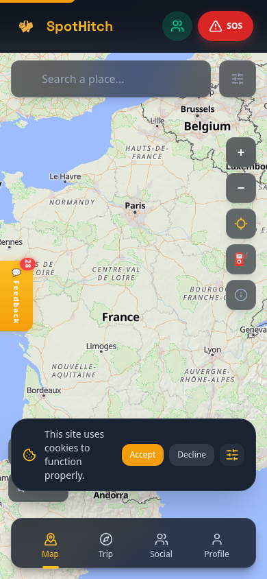
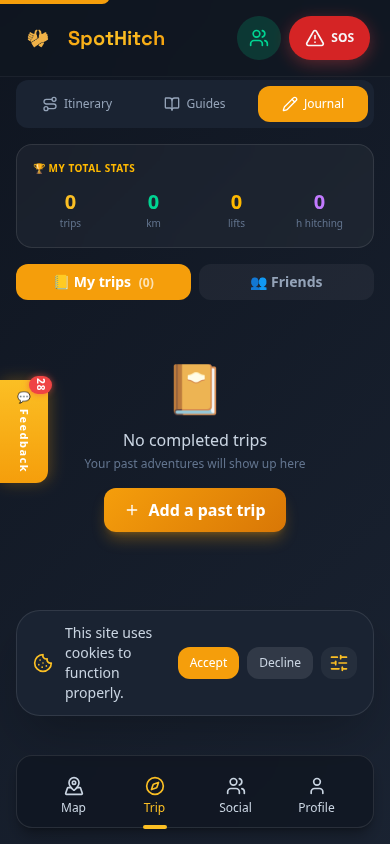
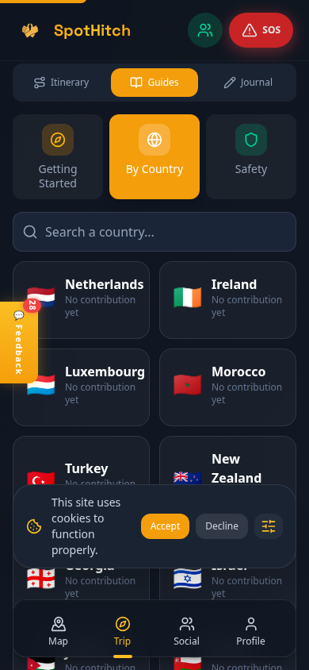
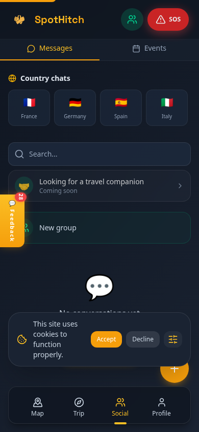
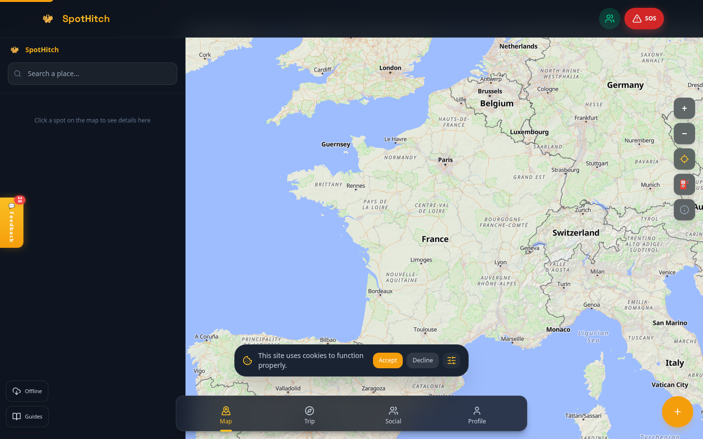
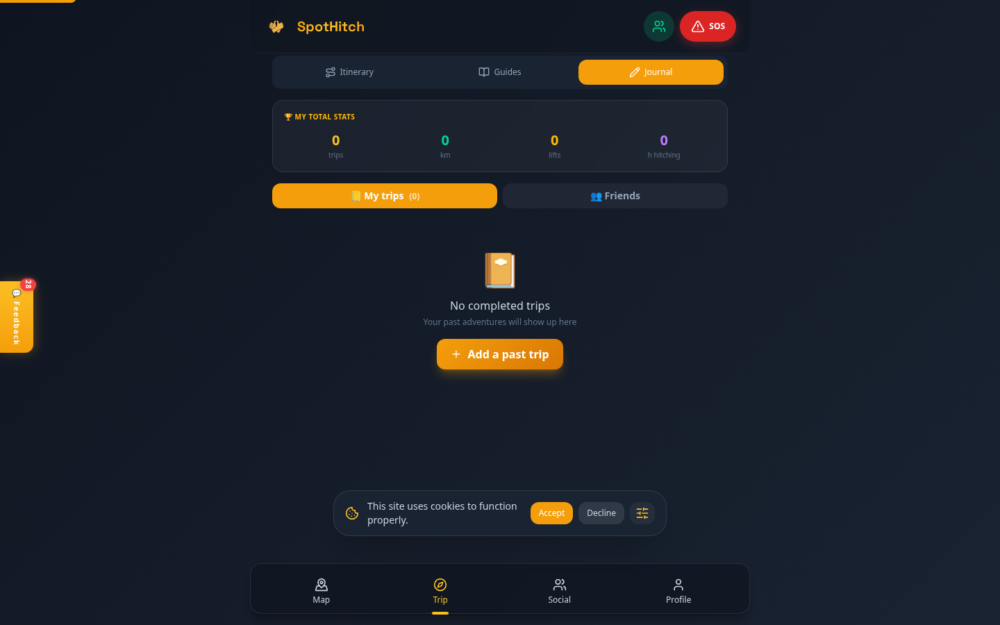

Attachment for NGI Zero Commons Fund Application — March 2026
1. Current App (Alpha Version)
SpotHitch is a fully functional Progressive Web App available at spothitch.com. It works on mobile (iOS/Android) and desktop browsers. Here are screenshots of the current production version:
Mobile (390 x 844px)

Map with spots

Trip journal

Country guides (96 countries)

Social / messaging
Desktop (1440 x 900px) — with split-view map

Desktop: side panel + map (Airbnb-style split view)

Desktop: centered content with responsive layout
2. Existing Features (already built)
🗺️ Map — Community spots with ratings, photos, clustering
📍 96 Countries — Guides with laws, safety, budget, culture (4 languages)
💬 Social — DMs, group chats, country chats, friend system
🎒 Trip Journal — Log trips, stats, itineraries
⛽ Gas Stations — Toggle overlay on map (Overpass API)
📡 Offline — Full offline mode, sync when back online
🏆 Gamification — Points, badges, leaderboard
🔒 Privacy — GDPR compliant, cookie consent, data export/delete
🌐 4 Languages — FR, EN, ES, DE with dynamic loading
📱 PWA — Installable, works on all devices
3. Guardian Mode — Technical Flow
Guardian Mode lets a traveler share their position in real-time with trusted contacts ("guardians"). If the traveler doesn't check in within a chosen interval, guardians are automatically alerted.
Position tracking begins — GPS via Geolocation API, adaptive frequency based on movement and battery. Positions encrypted end-to-end before sending to server.
Traveler responds "I'm OK" — timer resets, guardians see updated position on their map. Loop continues.
Alert Flow (traveler doesn't respond)
5
Grace period (configurable, default 5 min) — repeated alerts to traveler. Distinguishes "no network" from "no response."
↓
6
Automatic alert to guardians — push notification + automatic SMS (Twilio) + email with last known position, battery level, and trajectory.
↓
7
Community alert (opt-in) — nearby SpotHitch users receive a notification that someone may need help, with approximate area (not exact position).
4. SOS Mode — Technical Flow
SOS Mode is a set of emergency tools designed for situations where the traveler feels unsafe. All tools are designed to work discreetly.
Emergency Activation
1
One-tap SOS button — large, easy to find even in stress. Can also be triggered by shaking the phone (accelerometer).
↓
2
Silent alarm — no visible change on screen. The phone appears normal. Alert sent silently to guardians with position.
↓
3
Fake incoming call — realistic phone call UI with configurable caller name. Gives the traveler an excuse to leave a situation ("Sorry, I have to take this").
↓
4
Audio/video recording — discreet recording starts automatically. Stored locally, encrypted, can be used as evidence.
↓
5
Multi-channel alert — SMS (Twilio) + push notification + email to guardians. Community alert to nearby users (opt-in).
Offline resilience: If there's no internet connection, all data (position, recording, alert) is stored locally via IndexedDB and transmitted automatically via Background Sync as soon as the network returns.
5. Technical Stack
Frontend — Vite 5, vanilla JS ES Modules, Tailwind CSS 4